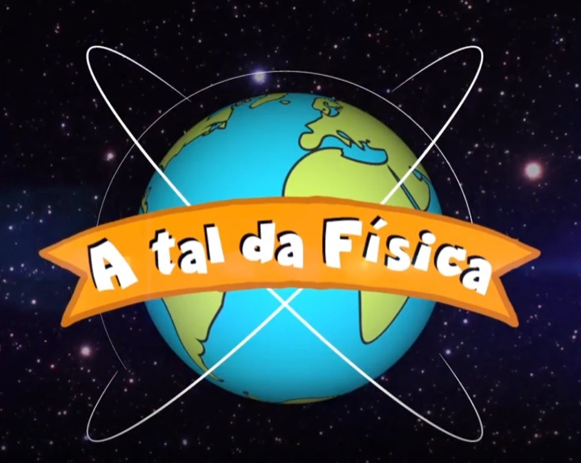

Sistema de design
Caderno de bordo
A identidade nasce do logo: o céu estrelado, a Terra em traço de cartum, a fita laranja e as órbitas do átomo. Páginas de papel claro para ler e estudar; faixas de céu para o logo, o cabeçalho e o rodapé. Todas as definições estão em variáveis no topo do estilo.css.

Uso do logo
Sempre sobre o céu (--sky), com as bordas do arquivo dissolvidas. Arquivo original intacto em marca/logo-original.webp.
Paleta oficial
Cores tiradas do logo
Para texto sobre papel, use as versões escuras com contraste suficiente: --accent-ink (laranja), --blue (oceano), --ok (continente) e --bad.
Tipografia
Três vozes
Leis de Newton
Princípio fundamental
Feita para máxima legibilidade, inclusive para quem tem baixa visão: letras de formas bem distintas, ideal para estudar.
F = m·a · 9,81 m/s² · 3,0 × 10⁸ m/s
Laboratório · Mecânica
Componentes
Botões, links e grafismos
Usar
- Fios de tinta de 1,5 px e cantos quase retos (4 px).
- Sombra chapada de "adesivo" só em elementos que se clicam.
- Órbitas como sublinhado do menu e marca de seção.
- Faixas de céu só no topo da página inicial, no cabeçalho e no rodapé.
Evitar
- Gradientes decorativos e sombras borradas.
- Caixas dentro de caixas: prefira fios e espaço em branco.
- Laranja da fita como cor de texto sobre papel (use --accent-ink).
- Animações que não explicam nada.